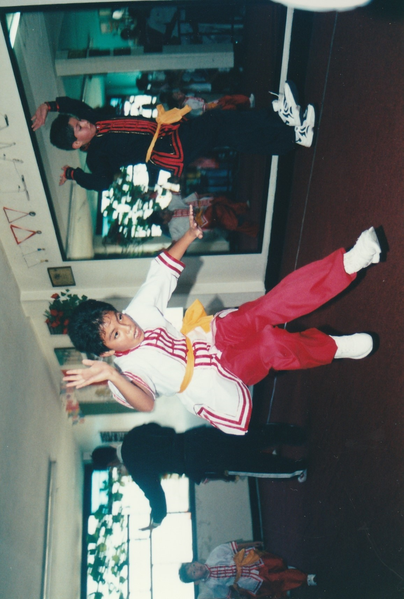

Mis Logros
Uno de los más difíciles de sobrellevar ha sido el bullying en todas mis etapas escolares, pero el estar a un semestre de terminar la licenciatura en Comunicaciones y Medios Digitales es un logro muy grande, ya que me ha costado muchísimo trabajo, lo que me caracteriza para lograr todo lo que propongo es que soy terco por eso me pongo retos que todo persona que este bien o con alguna discapacidad los puede lograr, es lo que quiero transmitir, motivar e inculcar a la gente el deseo de lograr sus metas.
